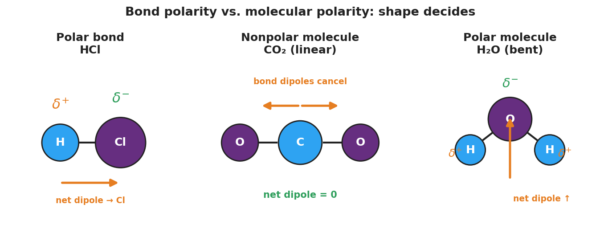

01 Phenomenon
Your teacher drops one identical M&M, printed side up, into a dish of water and one into a dish of vegetable oil at the same time. In the water, the colored coating bleeds out in seconds and the little white “m” floats free to the surface. In the oil, nothing happens — the coating stays put, no color, no floating “m.” Same candy, same temperature, same amount of liquid. Completely different outcome.
02 Driving question
Why does the same M&M coating dissolve and float in water but do absolutely nothing in oil?
03 Notice & wonder
| I notice… | I wonder… |
|---|---|
Turn & Talk #1: Water and oil are both clear liquids — but the candy treats them completely differently. In one sentence, what might be different about the liquids themselves, at a scale too small to see, that decides whether the coating dissolves?
04 Initial model
Before your teacher names anything, draw the water dish and the oil dish from the demo. For each, draw what you think is happening to the M&M coating at a scale too small to see — are the tiny pieces of coating spreading out into the liquid, or staying clumped together?
| Water dish — my model | Oil dish — my model |
|---|---|
In which dish does the coating spread out (dissolve)? _______________
Why might the two liquids be different? Write your best guess.
05 Investigate
Part 1 — “Like dissolves like” stations (predict, then test)
At each station, add a small amount of the test substance to water and to oil, stir gently, and record what happens. Write dissolves or does not dissolve in each box.
| Station | Test substance | In WATER | In OIL |
|---|---|---|---|
| 1 | Salt (NaCl) | ||
| 2 | Food coloring (water-based dye) | ||
| 3 | Vegetable oil (a few drops) |
Find the pattern: Sort the three test substances into two groups by behavior.
- Group A (dissolves in water): _______________________________________________
- Group B (dissolves in oil): _______________________________________________
Key question: The M&M coating from the demo behaved like which group — A or B? _______________
Part 2 — Bending water with a charged rod (class demo)
Your teacher runs a thin stream of water, then brings a charged plastic rod near it (without touching).
What happens to the water stream? _______________________________________________
For the stream to bend toward the rod, what must be true about a water molecule’s charge? (Hint: does it have a positive end and a negative end, or is its charge spread evenly?)
- Would a stream of oil bend toward the rod? Why or why not?
Part 3 — Bond polarity from electronegativity
Use the electronegativity values your teacher provides (Reference Tables). For each bond, find the difference (bigger value − smaller value). A difference of about 0.5 or more is a polar bond; almost zero is a nonpolar bond.
| Bond | Electronegativity values | Difference | Polar or nonpolar bond? |
|---|---|---|---|
| H–Cl | H ≈ 2.2, Cl ≈ 3.2 | ||
| O=O (in O₂) | O ≈ 3.4, O ≈ 3.4 | ||
| O–H (in H₂O) | O ≈ 3.4, H ≈ 2.2 |
06 Make it make sense
For each item below, use what you found in the Investigation. Show the electronegativity difference where asked.
1. Classify the bond. A bond forms between hydrogen (electronegativity ≈ 2.2) and chlorine (electronegativity ≈ 3.2).
- The electronegativity difference is: _______________
- Is this bond polar or nonpolar? _______________
- Which atom gets the partial negative charge (δ⁻)? Explain in one sentence.
2. Molecule vs. bond — CO₂. Carbon dioxide (CO₂) is a linear molecule with two polar C=O bonds.
- Are the C=O bonds polar or nonpolar? _______________
- Is the whole molecule polar or nonpolar? _______________
- Explain how a molecule made of polar bonds can still be a nonpolar molecule.
3. Molecule vs. bond — H₂O. Water (H₂O) is a bent molecule with two polar O–H bonds.
- Is the whole molecule polar or nonpolar? _______________
- Why does water’s bent shape give it a net dipole when CO₂’s linear shape does not?
4. Back to the candy. The M&M coating dissolves in water but not in oil.
- Is the coating polar or nonpolar? How do you know? _______________________________________________
- Which rule did you use to decide? _______________________________________________
07 Key vocabulary
- electronegativity
- a measure of how strongly an atom pulls on a shared bonding pair of electrons; read from the Reference Tables for each element. The *difference* in electronegativity between two bonded atoms decides whether their bond is polar (uneven sharing) or nonpolar (even sharing); the trend increases up and to the right on the Periodic Table, peaking at fluorine
- polar bond
- a covalent bond in which the bonding electrons are shared *unequally* because one atom is more electronegative, giving that atom a partial negative charge (δ⁻) and the other a partial positive charge (δ⁺); a bond between identical atoms (no electronegativity difference) is instead a *nonpolar bond*
- polar molecule
- a molecule that has an overall net dipole — a positive end and a negative end — because its polar bonds do *not* cancel; this happens when the molecular shape is asymmetric (e.g., bent H₂O). A *nonpolar molecule* has no net dipole, either because its bonds are nonpolar or because a symmetric shape (e.g., linear CO₂) makes equal bond dipoles cancel
Use each term in a sentence about today’s investigation. Do not copy the definition — describe something you actually did or observed.
electronegativity: _______________________________________________ _______________________________________________
polar bond: _______________________________________________ _______________________________________________
polar molecule: _______________________________________________ _______________________________________________
08 Revise your model
Return to your Initial Model (the two dishes). Add vocabulary labels:
Label the water side: ____________________ solvent (has a net dipole).
Label the oil side: ____________________ solvent (no net dipole).
Label the dissolving candy coating: ____________________ (like dissolves like).
Study the figure your teacher projected:

Then finish this Because / But / So sentence:
The M&M coating dissolves in water but not in oil because __________________________________________, but __________________________________________, so __________________________________________.
09 Exit ticket
(a) The N–H bond has an electronegativity difference of about 0.9. Is this bond polar or nonpolar? Explain in one sentence using the word electronegativity.
(b) CCl₄ has four polar C–Cl bonds arranged in a symmetric tetrahedral shape. Is CCl₄ a polar or a nonpolar molecule? Explain.
(c) Iodine (I₂) is nonpolar. Predict whether it dissolves better in water or in hexane (a nonpolar solvent), and state the rule you used.
10 Explore further
- Floating M&Ms exploration (Engage/Explore): Each group gets a dish of water and a dish of oil and two M&Ms. Drop one in each, letter-side up; observe and time what happens. Students record where the coating dissolves, where the "m" floats, and where nothing happens. No external URL required; the figure `figures/molecular_polarity.png` is projected during the Explain phase to formalize what they saw.
- "Like dissolves like" stations (Explore): Three small stations. (1) Salt (NaCl, ionic/polar-soluble) shaken in water vs. oil. (2) A drop of food coloring (water-based, polar) in water vs. oil. (3) A drop of vegetable oil (nonpolar) in water vs. more oil. Students fill a dissolve/no-dissolve grid and look for the pattern.
- Bending water with a charged rod (Explore/Elaborate, quick demo): Run a thin stream of water from a faucet, then bring a charged plastic rod (rubbed on hair/wool) near it. The stream visibly bends toward the rod because polar water molecules have a δ⁺ and δ⁻ end and orient toward the charge. A nonpolar liquid stream (if available) does not bend — strong evidence that water molecules carry separated charge.
- Reference: A Javalab "polarity of molecules" or PhET "molecule polarity" simulation can be projected to let students toggle electronegativity and watch the bond dipole grow; optional and not required for the hands-on flow.